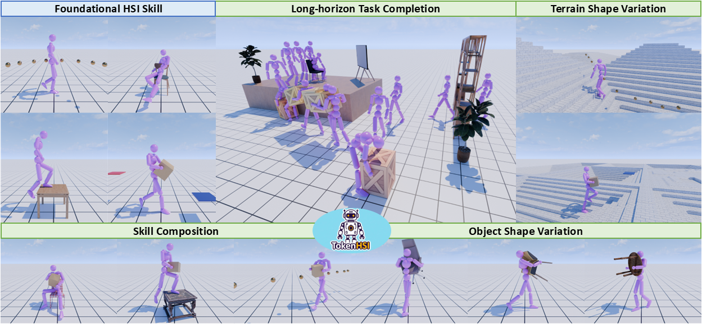
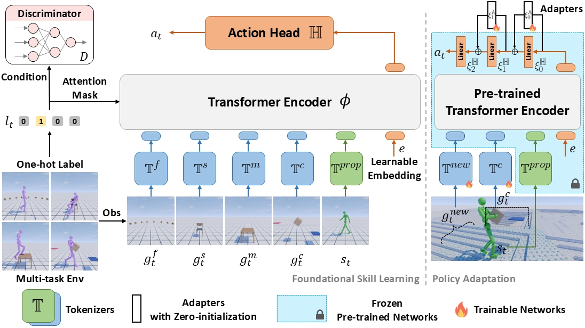

Skill Composition
We train a new task tokenizer to combine each of path-following, sitting, and climbing with carrying to create new composite skills.
More demonstrations
Unified Synthesis of Physical Human-Scene Interactions
through Task Tokenization
† Corresponding author
CVPR 2025
Oral Presentation (Top 3.3%)
Spotlight & Best Poster Award
at the 1st Workshop on Humanoid Agents at CVPR 2025

Synthesizing diverse and physically plausible Human-Scene Interactions (HSI) is pivotal for both computer animation and embodied AI. Despite encouraging progress, current methods mainly focus on developing separate controllers, each specialized for a specific interaction task. This significantly hinders the ability to tackle a wide variety of challenging HSI tasks that require the integration of multiple skills, e.g., sitting down while carrying an object.
To address this issue, we present TokenHSI, a single, unified transformer-based policy capable of multi-skill unification and flexible adaptation. The key insight is to model the humanoid proprioception as a separate shared token and combine it with distinct task tokens via a masking mechanism. Such a unified policy enables effective knowledge sharing across skills, thereby facilitating the multi-task training.
Moreover, our policy architecture supports variable length inputs, enabling flexible adaptation of learned skills to new scenarios. By training additional task tokenizers, we can not only modify the geometries of interaction targets but also coordinate multiple skills to address complex tasks. The experiments demonstrate that our approach can significantly improve versatility, adaptability, and extensibility in various HSI tasks.
TokenHSI consists of two stages: foundational skill learning and policy adaptation.

Stage 01
TokenHSI excels at seamlessly unifying multiple foundational HSI skills within a single transformer.
Stage 02
The learned skills can be flexibly and efficiently adapted to challenging new tasks through our transformer-based policy adaptation.
We train a new task tokenizer to combine each of path-following, sitting, and climbing with carrying to create new composite skills.
We fine-tune the task tokenizer (previously trained for box-carrying) to generalize it to more objects, such as chairs and tables.
We introduce a new height map tokenizer to enable the humanoid to perform path-following and carrying tasks on uneven terrain.
We jointly fine-tune multiple task tokenizers to tackle challenges in long-horizon tasks, such as skill transition and collision avoidance.
@inproceedings{pan2025tokenhsi,
title={Tokenhsi: Unified synthesis of physical human-scene interactions through task tokenization},
author={Pan, Liang and Yang, Zeshi and Dou, Zhiyang and Wang, Wenjia and Huang, Buzhen and Dai, Bo and Komura, Taku and Wang, Jingbo},
booktitle={Proceedings of the Computer Vision and Pattern Recognition Conference},
pages={5379--5391},
year={2025}
}
@inproceedings{pan2024synthesizing,
title={Synthesizing physically plausible human motions in 3d scenes},
author={Pan, Liang and Wang, Jingbo and Huang, Buzhen and Zhang, Junyu and Wang, Haofan and Tang, Xu and Wang, Yangang},
booktitle={2024 International Conference on 3D Vision (3DV)},
pages={1498--1507},
year={2024},
organization={IEEE}
}